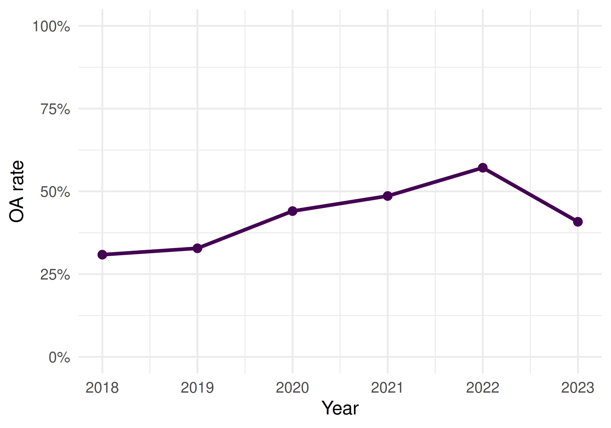
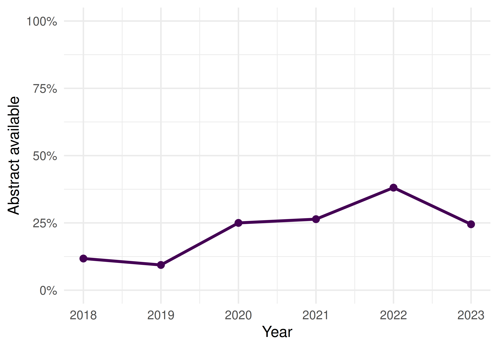
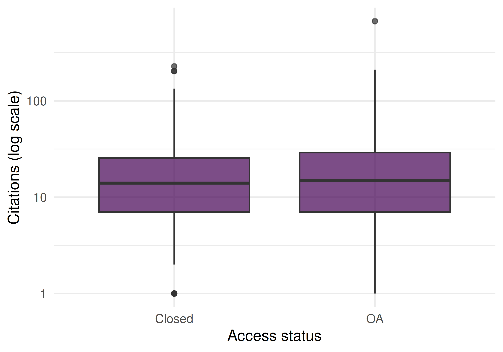

34 Reproducibility, RRIDs, and Badges
34.1 Learning objectives
After completing this chapter, you will be able to:
- Define reproducibility indicators and explain their role in research evaluation
- Search for data availability statements and open badges in bibliometric metadata
- Analyse the prevalence of reproducibility practices across journals and fields
- Discuss the relationship between transparency practices and citation impact
- Recognise the gap between reproducibility signalling and actual reproducibility
34.3 Conceptual background
The “replication crisis” has prompted widespread adoption of transparency practices: open data, open code, pre-registration, and registered reports. Bibliometrics can measure the uptake of these practices at scale, providing evidence for policy interventions.
Open badges are visual indicators (icons) attached to published papers that certify the availability of data, materials, or pre-registration. Journals like Psychological Science pioneered their use. Studies suggest that badges increase data sharing rates, though the quality of shared data varies.
Research Resource Identifiers (RRIDs) are persistent identifiers for research resources: antibodies, cell lines, model organisms, and software tools. Including RRIDs in methods sections improves reproducibility by enabling precise identification of the materials used. The RRID initiative has been adopted by over 1,000 journals.
Data availability statements (DAS) declare whether the data underlying a study are available and where to find them. Mandatory DAS policies have become common, but many statements say “data available upon request” without providing actual access. The presence of a DAS is easy to detect bibliometrically; the quality of actual data sharing is much harder to assess.
Code availability is increasingly expected, especially in computational fields. Journals like Nature require code availability statements. Platforms like GitHub, Zenodo, and Code Ocean facilitate code sharing, and DOIs for code repositories enable citation and tracking.
These practices are measurable proxies for reproducibility, but they are not reproducibility itself. A paper with an open badge may have unusable data; a paper without one may be perfectly reproducible. Hicks et al. (2015) warn against using transparency indicators as mechanical evaluation criteria.
34.4 Worked example
34.4.1 Analysing data availability patterns
works <- oa_fetch(
entity = "works",
primary_location.source.id = "S148561398",
from_publication_date = "2018-01-01",
to_publication_date = "2023-12-31",
type = "article",
options = list(sample = 400, seed = 42)
)
works_repro <- works |>
transmute(
id, display_name,
year = year(publication_date),
cited_by_count,
oa_status,
type,
has_abstract = !is.na(abstract)
)
cat(glue("Works: {nrow(works_repro)}\n"))#> Works: 40034.4.2 OA as a transparency proxy
works_repro |>
group_by(year) |>
summarise(oa_rate = mean(oa_status != "closed", na.rm = TRUE),
.groups = "drop") |>
ggplot(aes(x = year, y = oa_rate)) +
geom_line(linewidth = 1, colour = palette_sci(1)) +
geom_point(size = 2, colour = palette_sci(1)) +
scale_y_continuous(labels = scales::percent, limits = c(0, 1)) +
labs(x = "Year", y = "OA rate") +
theme_sci()
Figure 34.1: Proportion of open access articles by year as a transparency indicator.
34.4.3 Abstract availability as metadata completeness
works_repro |>
group_by(year) |>
summarise(abstract_rate = mean(has_abstract), .groups = "drop") |>
ggplot(aes(x = year, y = abstract_rate)) +
geom_line(linewidth = 1, colour = palette_sci(1)) +
geom_point(size = 2, colour = palette_sci(1)) +
scale_y_continuous(labels = scales::percent, limits = c(0, 1)) +
labs(x = "Year", y = "Abstract available") +
theme_sci()
Figure 34.2: Abstract availability rate by year.
34.4.4 Transparency and citation impact
works_repro |>
mutate(is_oa = ifelse(oa_status != "closed", "OA", "Closed")) |>
ggplot(aes(x = is_oa, y = cited_by_count + 1)) +
geom_boxplot(fill = palette_sci(1), alpha = 0.7) +
scale_y_log10() +
labs(x = "Access status", y = "Citations (log scale)") +
theme_sci()
Figure 34.3: Citation count by OA status, a proxy for the transparency–impact relationship.
34.4.5 Summary statistics
works_repro |>
mutate(is_oa = oa_status != "closed") |>
group_by(is_oa) |>
summarise(
n = n(),
mean_cites = round(mean(cited_by_count), 1),
abstract_rate = scales::percent(mean(has_abstract)),
.groups = "drop"
) |>
gt()| is_oa | n | mean_cites | abstract_rate |
|---|---|---|---|
| FALSE | 230 | 20.6 | 0% |
| TRUE | 170 | 30.2 | 53% |
34.5 Diagnostics and interpretation
- Proxy vs. reality: OA status and abstract availability are proxies for transparency, not direct measures of reproducibility. Actual data and code sharing require checking external repositories.
- Journal policies: Changes in journal policies (mandatory DAS, badge adoption) can cause step changes in transparency indicators. Control for journal when comparing across time.
- Selection effects: Papers with open data may be of higher quality (authors confident enough to share), creating a spurious transparency–citation correlation.
- Field differences: Data sharing norms vary enormously. Genomics shares data routinely; clinical research often cannot due to privacy. Compare within fields.
34.7 Limitations and responsible use
- Signals are not substance. A data availability statement does not guarantee the data are actually available, usable, or correct. Badges certify process, not outcome.
- Mandates inflate compliance without improving practice. When journals require DAS, compliance rises but “available upon request” becomes the default, not genuine sharing.
- Reproducibility is multidimensional. No single indicator captures it. Data availability, code availability, methods transparency, pre-registration, and statistical rigour all contribute independently.
- Do not penalise fields where sharing is constrained. Clinical data (privacy), indigenous data (sovereignty), and sensitive social data cannot be freely shared. Mandating open data policies uniformly across fields is inappropriate (Hicks et al. 2015).
34.9 Common pitfalls
- Equating open data with reproducibility. Data can be open but undocumented, incorrectly formatted, or insufficient to reproduce the analysis.
- Counting badges without checking quality. A badge means the journal certified availability at publication time. The link may be broken or the data may have been removed.
- Ignoring negative results. Reproducibility also requires publishing null results and failed replications. These are poorly captured by current transparency indicators.
- Using transparency metrics as performance indicators. Transparency practices should be valued, but mechanically rewarding them creates perverse incentives (superficial compliance).
34.10 Exercises
DAS detection. For papers with full abstracts, search for keywords like “data availability”, “code availability”, or “github.com” in the abstract text. What proportion mention data or code sharing?
Cross-journal comparison. Compare abstract availability and OA rates for three journals. Do journals with higher OA rates also have better metadata completeness?
Temporal trends. Track the proportion of papers with abstracts, OA status, and high citation counts over time. Are transparency proxies correlated with citation impact within years?
34.11 Solutions
Solutions are provided in 2.11.
34.12 Further reading
- Hicks et al. (2015) — The Leiden Manifesto: responsible use of metrics, including transparency indicators.
- Priem et al. (2022) — OpenAlex metadata as a basis for reproducibility analysis.
- American Society for Cell Biology (2012) — DORA: assessment should consider research practices, not just outputs.
34.13 Session info
#> R version 4.4.1 (2024-06-14)
#> Platform: x86_64-pc-linux-gnu
#> Running under: Ubuntu 24.04.4 LTS
#>
#> Matrix products: default
#> BLAS: /usr/lib/x86_64-linux-gnu/openblas-pthread/libblas.so.3
#> LAPACK: /usr/lib/x86_64-linux-gnu/openblas-pthread/libopenblasp-r0.3.26.so; LAPACK version 3.12.0
#>
#> locale:
#> [1] LC_CTYPE=C.UTF-8 LC_NUMERIC=C LC_TIME=C.UTF-8 LC_COLLATE=C.UTF-8 LC_MONETARY=C.UTF-8
#> [6] LC_MESSAGES=C.UTF-8 LC_PAPER=C.UTF-8 LC_NAME=C LC_ADDRESS=C LC_TELEPHONE=C
#> [11] LC_MEASUREMENT=C.UTF-8 LC_IDENTIFICATION=C
#>
#> time zone: UTC
#> tzcode source: system (glibc)
#>
#> attached base packages:
#> [1] stats graphics grDevices utils datasets methods base
#>
#> other attached packages:
#> [1] uwot_0.2.4 Matrix_1.7-0 word2vec_0.4.1 stm_1.3.8
#> [5] topicmodels_0.2-17 quanteda.textstats_0.97.2 visNetwork_2.1.4 ggraph_2.2.2
#> [9] tidygraph_1.3.1 igraph_2.3.1 quanteda_4.4 pdftools_3.8.0
#> [13] arrow_24.0.0 bibliometrix_5.3.0 RefManageR_1.4.0 bib2df_1.1.2.0
#> [17] rcrossref_1.2.1 gt_1.3.0 tidytext_0.4.3 glue_1.8.1
#> [21] openalexR_3.0.1 lubridate_1.9.5 forcats_1.0.1 stringr_1.6.0
#> [25] dplyr_1.2.1 purrr_1.2.2 readr_2.2.0 tidyr_1.3.2
#> [29] tibble_3.3.1 ggplot2_4.0.3 tidyverse_2.0.0
#>
#> loaded via a namespace (and not attached):
#> [1] bibtex_0.5.2 RColorBrewer_1.1-3 rstudioapi_0.18.0 jsonlite_2.0.0 magrittr_2.0.5
#> [6] modeltools_0.2-24 farver_2.1.2 rmarkdown_2.31 fs_2.1.0 vctrs_0.7.3
#> [11] memoise_2.0.1 askpass_1.2.1 base64enc_0.1-6 htmltools_0.5.9 contentanalysis_1.0.0
#> [16] curl_7.1.0 broom_1.0.12 janeaustenr_1.0.0 cellranger_1.1.0 sass_0.4.10
#> [21] bslib_0.10.0 htmlwidgets_1.6.4 tokenizers_0.3.0 plyr_1.8.9 httr2_1.2.2
#> [26] plotly_4.12.0 cachem_1.1.0 dimensionsR_0.0.3 mime_0.13 lifecycle_1.0.5
#> [31] pkgconfig_2.0.3 R6_2.6.1 fastmap_1.2.0 shiny_1.13.0 digest_0.6.39
#> [36] patchwork_1.3.2 shinycssloaders_1.1.0 rprojroot_2.1.1 RSpectra_0.16-2 SnowballC_0.7.1
#> [41] labeling_0.4.3 urltools_1.7.3.1 timechange_0.4.0 mgcv_1.9-1 polyclip_1.10-7
#> [46] httr_1.4.8 compiler_4.4.1 here_1.0.2 bit64_4.8.0 withr_3.0.2
#> [51] S7_0.2.2 backports_1.5.1 viridis_0.6.5 ggforce_0.5.0 MASS_7.3-60.2
#> [56] rappdirs_0.3.4 bibliometrixData_0.3.0 tools_4.4.1 otel_0.2.0 stopwords_2.3
#> [61] zip_2.3.3 httpuv_1.6.17 rentrez_1.2.4 nlme_3.1-164 promises_1.5.0
#> [66] grid_4.4.1 stringdist_0.9.17 reshape2_1.4.5 generics_0.1.4 gtable_0.3.6
#> [71] tzdb_0.5.0 rscopus_0.9.0 ca_0.71.1 data.table_1.18.4 hms_1.1.4
#> [76] xml2_1.5.2 utf8_1.2.6 ggrepel_0.9.8 pillar_1.11.1 nsyllable_1.0.1
#> [81] vroom_1.7.1 later_1.4.8 splines_4.4.1 tweenr_2.0.3 brand.yml_0.1.0
#> [86] lattice_0.22-6 FNN_1.1.4.1 bit_4.6.0 tidyselect_1.2.1 tm_0.7-18
#> [91] miniUI_0.1.2 downlit_0.4.5 knitr_1.51 gridExtra_2.3 NLP_0.3-2
#> [96] bookdown_0.46 stats4_4.4.1 crul_1.6.0 xfun_0.57 graphlayouts_1.2.3
#> [101] matrixStats_1.5.0 DT_0.34.0 humaniformat_0.6.0 stringi_1.8.7 lazyeval_0.2.3
#> [106] qpdf_1.4.1 yaml_2.3.12 evaluate_1.0.5 codetools_0.2-20 httpcode_0.3.0
#> [111] cli_3.6.6 xtable_1.8-8 jquerylib_0.1.4 dichromat_2.0-0.1 Rcpp_1.1.1-1.1
#> [116] readxl_1.4.5 triebeard_0.4.1 XML_3.99-0.23 parallel_4.4.1 assertthat_0.2.1
#> [121] pubmedR_1.0.2 slam_0.1-55 viridisLite_0.4.3 scales_1.4.0 crayon_1.5.3
#> [126] openxlsx_4.2.8.1 rlang_1.2.0 fastmatch_1.1-8